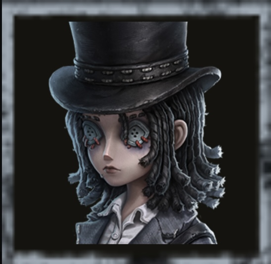
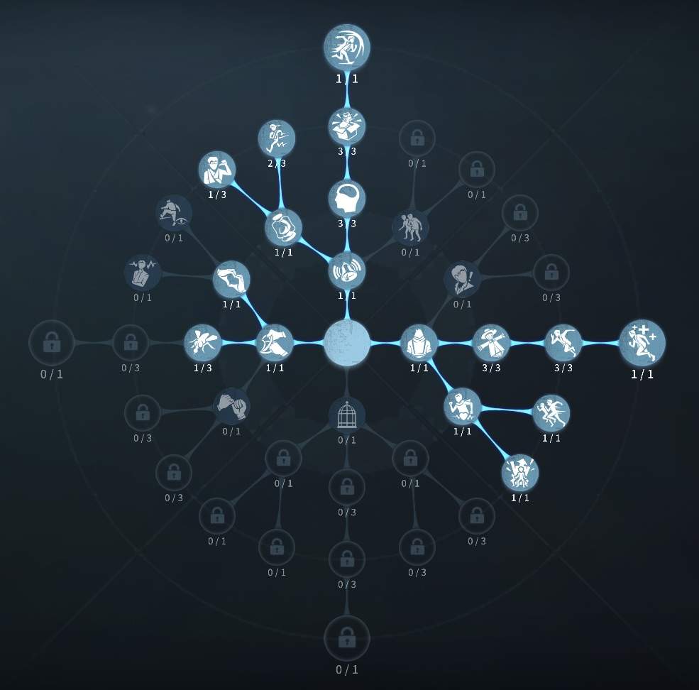
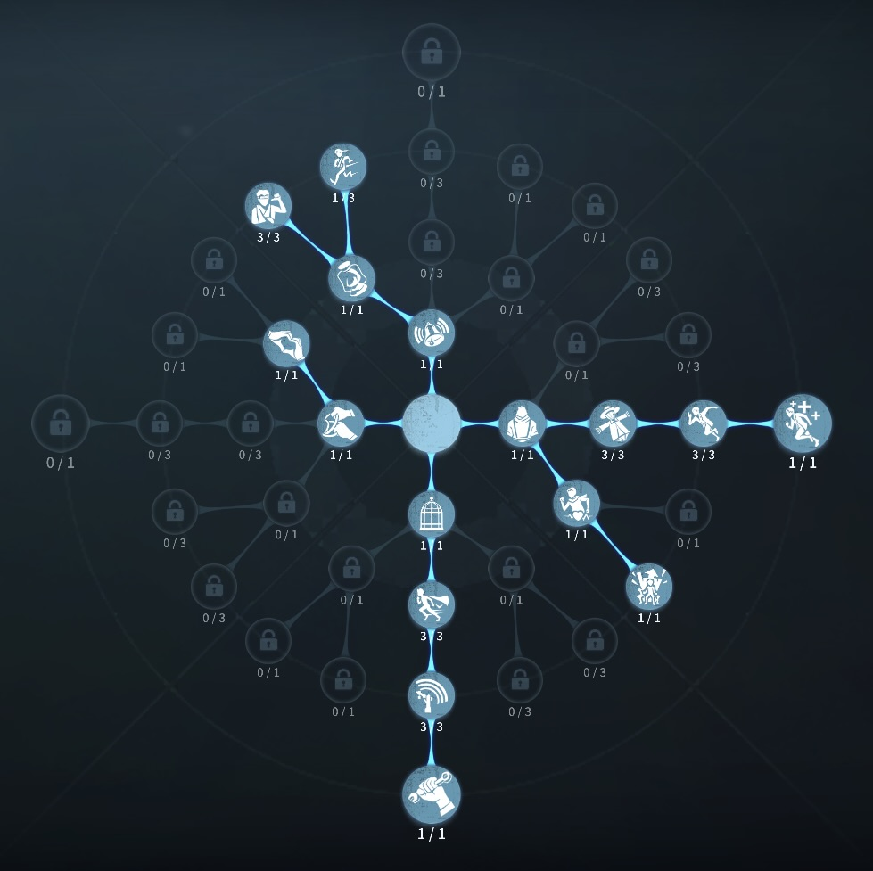

幻灯師（アマンダ・ゲイティス）の評価
君が殴っているそれは僕の残像だよ？？
外在特質と特徴
特質1:人物投影
・自分を記録すると、10秒間の状態投影と位置投影効果を獲得する。仲間を記録すると、仲間は8秒間の状態投影効果を獲得する。サバイバー1人につき2回まで記録できる。・記録中に通常攻撃ダメージを受けると、即座に記録が終了する。サバイバーは自分から記録を終了させることもできる。
・サバイバーが拘束されているロケットチェアの付近20メートル以内では、記録時間が75%減少する。
脱出ゲートが通電または脱出口が開放された後、記録時間が50%に減少します。
【状態投影】
・サバイバーが通常攻撃以外のダメージ（写真家の写真世界合併と破輪の突刺起爆によるダメージは含まれない）、或いは強力なコントロール効果（スタン系効果）を受けた場合、その影響は記録が終了するまで反映されない。・記録期間中にダメージを受けると、コントロール効果は無効化される。また、記録期間中に複数のコントロール効果を受けた場合は、最後に受けた効果のみが反映される。
【位置投影】
・使用すると自身をその場に残した状態で離脱し、移動や操作を行うことができ、移動速度が10%上昇する。・記録期間中は新しい位置を複数回記録でき、位置を記録した後は移動経路に痕跡が残る。
特質2:静止物投影
・幻灯師は暗号機、ロケットチェア、脱出ゲートの電源スイッチを記録できる。サバイバーは記録中の対象を操作でき、操作速度が10%上昇する。サバイバーは自分から記録を終了することができる。| 記録対象 | 記録時間 | 効果 |
|---|---|---|
| 暗号機 | 20秒間 | 暗号機の解読進捗を記録中に解読した進捗は記録が終了した瞬間に反映される。 |
| ロケットチェア | 5秒間 | ロケットチェアの脱落進度を記録中に増加した脱落進度は記録が終了した瞬間に反映される。 |
| 電源スイッチ | 20秒間 | 脱出ゲートの電源スイッチの解読進捗を記録中に解読した進捗は記録が終了した瞬間に反映される。 |
特質3:光学錯覚
・幻灯師が倒した板を1秒間破壊できなくさせる。幻灯師が離脱状態にある場合、効果時間は1.5秒間に延長される。この効果は10秒間に1回のみ発動可能。特質4:機械音痴
・解読速度が10%低下する。特徴
ハンター0.5ダメージのものをフライホイール効果で無効化できる。静止物投影で暗号機、ゲート、ロケットチェアを遠隔で触ることができる最強サバイバー
光学錯覚による板破壊1秒阻止は必ず板を割る場面で使用することで確実に次のポジションまでスキルなしで移動できる。
幻灯師の簡単解説
「人物投影」とは？
・記録中の幻灯師の残像が通常攻撃を受けてしまうと、その場で記録が解除され、ダメージを受ける。
なので、記録を更新して絶対に記録中は通常攻撃で殴られないようにしよう。
・記録中の幻灯師の残像が受けたダメージ効果やスタン効果が遅延され、記録終了後にまとめて反映される。
💡 ここ大事！
フライホイール効果を記録終了後に使用することでダメージ、スタンを実質的に無効化することができる。
逆に、フライホイール効果がない場合は、ダメージ後に反映されるため、0.5ダメージを受けそうなら、記録を更新してダメージ防ぐ、スタンを記録終了後に受けてしまうなら、殴られない板間越し、窓越しでスタンしよう！
記録が終了するタイミング
- 記録時間が経過した時（自分:10秒、仲間:8秒）
- 通常攻撃のダメージを受けた時（即座に記録終了）
- 自分から記録を終了させた時
- ロケットチェア付近20m以内で記録した場合（記録時間が75%減少）
記録中のダメージとスタン効果
| 攻撃・効果の種類 | 記録中の影響 | 具体例 |
|---|---|---|
| 通常攻撃 | 即座に記録終了 | ハンターの基本攻撃、リッパーのナイフ、写真家の写真世界合併、破輪の突刺起爆など |
| スタン効果 | 記録終了後に反映（最後の1つのみ） | アンの猫、白黒無常の傘、蠟人形師の蝋、など |
| 特殊ダメージ | 記録終了後に反映 | ボンボンの爆弾、彫刻師の彫像、黄衣の触手攻撃など |
重要：記録中に複数のスタン効果を受けた場合、最後に受けた効果のみが記録終了後に反映されます。
基本的な立ち回り方
1. 追われた時
はやめに記録を使うことが重要、ハンターの射程圏内から記録をつかってしまうと記録に攻撃を受ける可能性があるため伸びない。
記録中の透明状態幻灯師には攻撃判定がないため、板当て攻防に100％勝つことができるため、板当てを狙おう！
また、初動はフライホイール効果がたまっていないため0.5ダメージ、スタン効果なども受けないように気を付けよう。
倒した板は一秒間割ることができないので、強い板の板攻防では空振りを誘発した場合は、すぐに倒して、距離をとろう。
もし、余裕があるなら、解読を回している味方に静止物投影で解読速度をあげられたら完璧！！（できれば、救助職）
2. 追われない時
解読しよう！
静止物投影を使って、救助職などの暗号機にバフをかけよう
救助が4割、9割で間に合いそうにない場合、静止物投影で進度を止めてあげよう！
スタンハンターや0.5ダメージハンターの場合、追われている味方に記録をつけてあげるのも有効
3. 注意点
幻灯師を使う際には、以下の点に注意しましょう。
🔹 ラスト暗号機に記録をかける際は99％で解除しよう
→寸止めが作れずに20秒後に自動であがってしまうため。
🔹 ゲート進捗が100％になった際は記録を解除して開けるようにしよう
→ ゲートをハンターに守られてしまう可能性があるため
🔹 ロケットチェアを止める際は4.9割に間に合わない時だけにしよう
→ 記録で止めている5秒後には5秒間の進捗が一気に増えるのできをつけよう！
幻灯師の応用スキル
味方記録硬直消し
味方に記録をつける際に連続でスキルボタンをタップすることで硬直を消すことができる
ゴースト板当て
記録透明化中に当たり判定がないのを利用して板当てすること
おすすめの内在人格
解読、チェイス型人格
この内在人格は、観客効果を採用して解読速度を上げつつ、ピアの効果を採用していることで救助後の一伸ばしを狙う！

危機一髪型人格
この内在人格は、癒合3を採用しておくことで、救助後の即座治療可能とし観客効果で解読効率を上げる人格


みんなのコメント